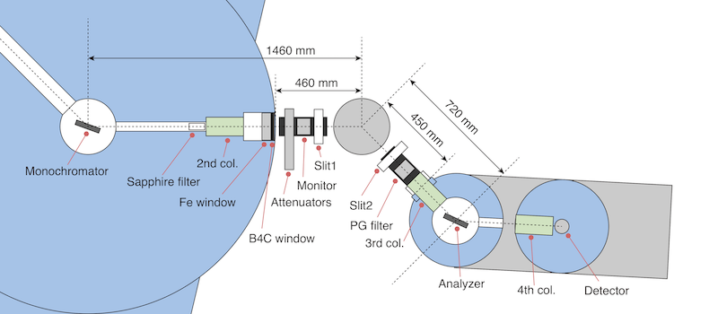

-
-
Instrument
|
Two-theta range : - ω angle range : - degs  |
Sample
| Sample | q-vectors |
|
a* : A-1 b* : A-1 angle between a* and b* : deg. Reflection condition ωoffset : |
q1 : h , k q2 : h , k q3 : h , k |
Qx - Qy map
|
Neutron energy
Ef = meV(Possible Efs with a PG filter are 14.7 and 34 meV) Target reflection
(Ht,Kt,Lt)=(,,0)|Q|(=2π/d) = A-1 2θ = deg Q-vector → ki → kf → Gray circles are Al peaks. |